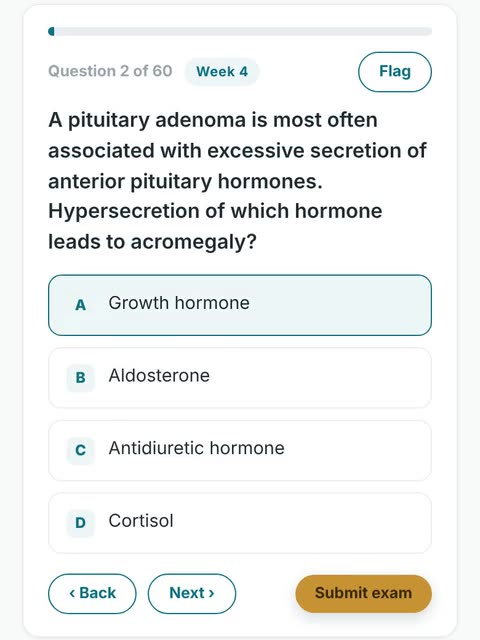
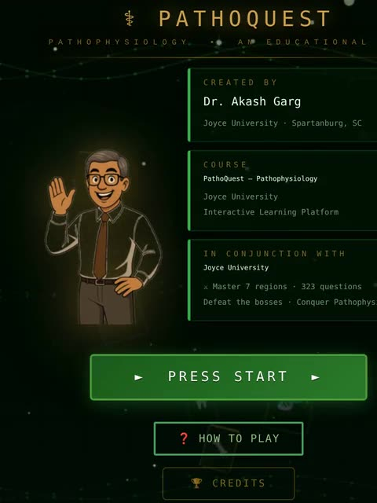
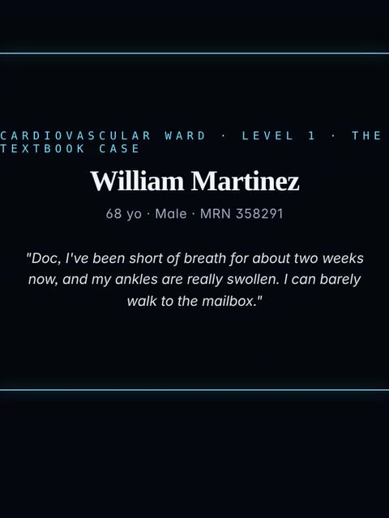
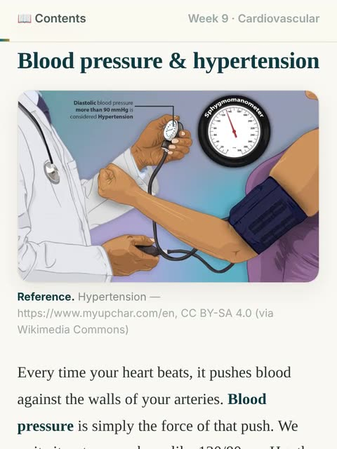
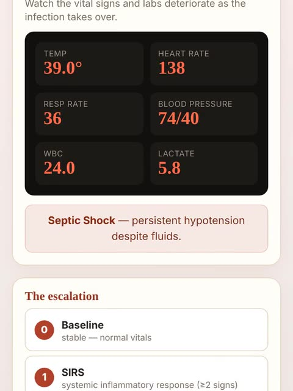
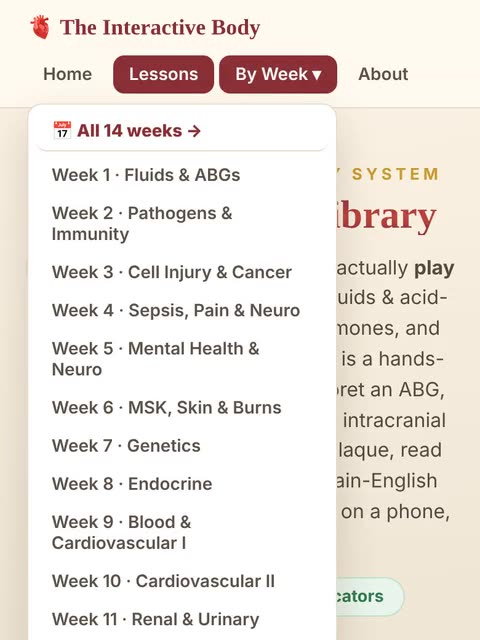

Pathophysiology, explained and played.
Every resource for the course in one place. Pick a week to open its podcast, interactive book, flipbook and flashcards, or jump to an exam.
Optional study extras. Everything on this hub is extra practice. Your required work, readings and lecture slides are in Canvas.
What is the most common cause of right-sided heart failure?
- 755exam-style questions in Exam Prep HQ
- 86interactive lessons
- 108Medical Mystery cases
- 13book chapters
- 13podcast episodes
- 7exam study guides
Learn it, see it, play it
Each card shows the tool in action. Every tool covers the same material a different way.
Swipe for more.
- New

Exam Prep HQ
Timed simulator, ABG trainer, lab signature and red flag drills, and a cram sheet, for every exam.
Open - Main
The Chase
Outrun the Quiz-Bot across hundreds of NCLEX-style questions.
Play 
PathoQuest
A pixel art RPG. Battle a disease boss in every body system.
Play
Medical Mystery
Work a real case inside an EHR and prove the pathophysiology.
Play
The Book
An interactive pathophysiology book. Chapters with figures, tables and embedded labs.
Open
The Interactive Body
86 hands-on animated lessons plus ABG and Punnett calculators.
Open
Lesson Library
Browse every interactive lesson by system and topic.
Open
This week
Everything for one week in a single row: the podcast, the interactive book, the flipbook, flashcards, the book chapter, the Chase round and that week's interactive lessons.
All 14 weeks at a glance
Getting ready for an exam
Each exam has its KCR review, the PathoParty questions, a study guide to read or download, a drill in Exam Prep HQ and a Chase round.
📖 New here? How to use this hub — what each tool is and a study routine›
Every tool covers the same material a different way — mix and match to whatever helps it stick.
Podcasts on Spotify
Short audio episodes that talk through each week's big ideas. Put one on in the car or at the gym — ideal for absorbing material hands-free and for a refresher right before an exam.
Interactive Books on H5P
More than reading — questions, clickable images, and activities built in, checking your understanding as you go. Move at your own pace and redo any section.
Flipbooks illustrated
Page-turning illustrated workbooks that turn dense pathophysiology into clear pictures and step-by-step diagrams. Best if you learn by seeing a process laid out.
Flashcards on Quizlet
A deck for every week, embedded right in the page. Fastest way to drill terms and mechanisms — use Learn and Test modes on Quizlet for spaced repetition.
Exam Study Guides view & PDF
A complete review for each exam — concepts organised with mechanisms, why-it-matters notes, exam tips, and practice questions. Read in your browser or download the PDF.
KCR Exam Reviews Google Docs
Key Concept Review documents for each exam — the concise list of what you are responsible for. Use them as your checklist when you think you're finished studying.
PathoParty Questions Google Slides
The in-class review question sets. Run them again on your own, or with a study group, to pressure-test what you actually know before exam day.
Exam Prep HQ in-hub
Your exam-prep command centre, covering all six unit exams and the cumulative final. Each has a timed and scored exam simulator drawing on the 755-question course bank, an ABG trainer that generates a fresh blood gas every time, and rapid drills for lab signatures, easily-confused look-alike pairs, act-now red flags, and mechanism chains — plus a printable cram sheet. A readiness dashboard tracks your accuracy exam by exam and names the one to study first.
The Interactive Body in-hub
Ninety hands-on animated lessons — click, drag, and toggle to watch each mechanism unfold, plus live ABG and Punnett-square calculators.
The Book separate site
A full interactive pathophysiology textbook for this course, with figures, comparison tables, clinical pearls, glossaries, quizzes, and the interactive labs embedded in context.
The Games in-hub
The Chase is a quiz-show race; PathoQuest is an RPG where each body system is a boss; Medical Mystery puts you in an EHR to diagnose a real case. All three teach with full rationales.
📈 A simple way to study each week
- Meet the concepts with the Interactive Book.
- Hear them explained another way with the Podcast.
- See the visuals in the Flipbook.
- Watch the mechanism move in The Interactive Body.
- Drill the terms with the week's Flashcards.
- Lock it in by playing The Chase and PathoQuest.
🎓 When an exam is coming
- Open the exam below and read the KCR Review — that's your checklist.
- Work the Study Guide for anything on the checklist you're shaky on.
- Run the PathoParty Questions as a self-test, ideally with a study group.
- Re-drill the weakest week's Flashcards.
- Open Exam Prep HQ, run the simulator cold, and let the readiness dashboard name your weakest exam.
- The night before, read that exam's Cram Sheet and replay The Chase.